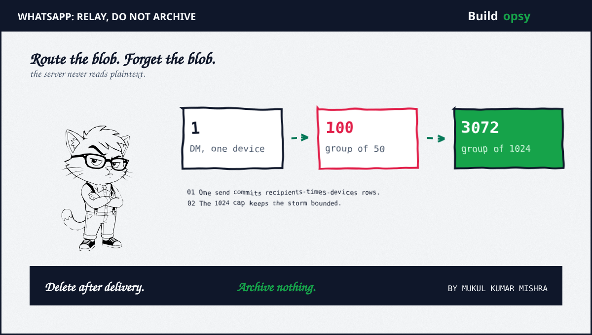
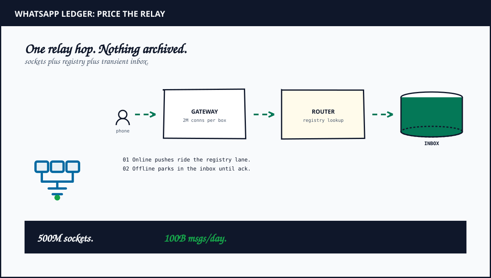

1. The Moment A Message Became A Routing Problem
Most messaging designs start with a table. Sender writes a row. Recipient reads the row. Add an index plus call it a day. That model collapses the week two billion people press send while holding a socket open doing nothing. The load shaping the architecture is not the message rate. It is the count of idle connections waiting for a push that may never come.
WhatsApp reframed the product as a telephone exchange with cryptography attached. Each device holds one persistent connection. The server maps every user plus device to the gateway holding its socket. A message arrives as an opaque blob. The router asks one question: is the recipient connected now. Yes means push down the live socket. No means park in a transient inbox plus nudge the app awake.
Once delivered plus acked, the server deletes its copy. History lives on endpoints, never in the relay. That single deletion rule is why a hundred-billion-message day fits in a fleet most startups could rent. Storage is not the system. The socket map is the system.
2. Why A Relay That Forgets Deserves A Teardown
Chat clones teach CRUD. WhatsApp teaches density plus forgetting plus blindness. The public record gives three load-bearing facts: Erlang processes holding millions of sockets per host, a 2014 peak near 342 thousand inbound plus 712 thousand outbound messages per second on roughly 150 chat servers, plus a tiny team running planetary scale. Few systems publish a clearer efficiency ledger.
The contrast with Discord messaging sharpens the lesson. Discord keeps channel history forever across Cassandra partitions because channels are the product. WhatsApp deletes on ack because live delivery is the product. Same messaging family. Opposite durability contract. The bill hides in the boundary between remembering everything plus remembering nothing.
Encryption adds the third lesson. Signal E2E makes the server formally blind, which removes entire feature temptations: server search plus content moderation plus link previews all die at the architecture line. Constraints that delete code paths are the cheapest scaling strategy ever published.
3. The Architecture: Sockets Plus Registry Plus Transient Inbox
Phones open one persistent connection each to a gateway fleet built on Erlang OTP, where every socket is a lightweight process with isolated memory plus independent garbage collection. Reported density reaches 1 to 2 million connections per host. A fast in-memory registry maps each user plus device to its gateway with a TTL refreshed by heartbeats. Delivery trusts the registry, never a guess.
The router sits behind the gateways. It accepts the ciphertext blob plus looks up the recipient mapping plus pushes to online sockets. Offline recipients get inbox rows sharded by recipient identifier plus a wake-up nudge through platform push services carrying no content. Media never touches the hot path: clients upload to blob storage plus the message carries only an encrypted pointer with a bounded TTL.
Ordering stays per conversation, not global. A partitioned log keyed by conversation identifier preserves chat order plus decouples group fan-out from gateway latency, the same partitioning discipline behind Kafka consumer scaling. Presence rides a separate lossy lane with 30-second heartbeats plus typing throttles, the same lane split behind the Docs presence boundary. Durable inbox for truth. Lossy lanes for speed.
4. The Routing Problem: Finding Bob Without Shouting
Alice socket lands on server A. Bob socket lands on server B. Alice message arrives at A, which holds no Bob socket. Storage is shared but sockets are not, so durability alone delivers nothing until B hears about it. Four designs climb this ladder. Sticky load balancing fails on every reconnect. One topic per user fails on broker arithmetic at billions of topics. Consistent hashing works but turns fleet growth into a rehashing event with dual-delivery handoffs.
The chosen answer makes the subscription the registry. When Bob socket lands on B, B subscribes to Bob topic on an in-memory pub-sub layer. Any server publishes to Bob topic. The layer forwards to subscribers. Placement becomes free plus scaling stops being a migration. The catch is printed on the tin: pub-sub is at-most-once, so a missed push must replay from the inbox on reconnect plus a periodic sweep closes transient gaps. Cheap lossy lane for speed. One durable write for truth.
Delivery is therefore at-least-once by construction. A crash between push plus inbox delete replays the row. Duplicates die at the receiver: every message carries a client-generated UUID, clients keep a seen window plus ack without rendering replays, senders retry with the same identifier so double sends collapse server-side. At-least-once transport plus idempotent endpoints compose into effectively-once conversation, tracked through SENT plus DELIVERED plus READ receipt events that delete the offline copy on DELIVERED, not on READ.
5. E2E Without Breaking The Relay: X3DH Plus Ratchet Plus Sender Keys
Signal properties change surprisingly little structurally because the relay already treats content as opaque. X3DH lets Ana start a session with offline Ben using pre-published public bundles from a key directory, so no round trip needs Ben awake. The Double Ratchet then derives fresh keys per message, giving forward secrecy plus break-in recovery automatically. Compromise today exposes neither yesterday nor tomorrow after the next ratchet step.
Groups use Sender Keys: each sender distributes one chain once over pairwise channels, then encrypts subsequent messages once instead of once per member. Naive group crypto costs O(members) per message. Sender Keys cost O(1) per message after setup. Multi-device multiplies endpoints instead: phone plus desktop plus tablet are separate cryptographic identities, so true fan-out is recipients times devices per recipient, all routed as blobs the server never opens.
The price is explicit. The server surrenders search plus content filtering plus previews plus compliance holds. Legal discovery becomes structurally impossible rather than merely unimplemented. Name that boundary in design reviews instead of improvising past it. Blindness is the privacy guarantee plus the missing-feature list in one line item.
6. The Fan-Out Ledger: What One Send Really Writes
Fans call it one message. The storage layer calls it recipients times devices. Count the writes before praising the latency.
| Conversation shape | Recipient devices | Inbox writes per send |
|---|---|---|
| Direct message | 1 device | 1 row |
| Direct message | 3 devices | 3 rows |
| Group of 50 | 2 average | 100 rows |
| Group of 200 | 3 average | 600 rows |
| Group of 1024 | 3 average | 3072 rows |
All rows for one send commit inside a single transaction, plus the sender sees SENT only after that commit. Cost plus failure surface both grow linearly with recipients times devices, which is why the group cap is load-bearing rather than cosmetic. A 100-million-follower broadcast would need 100 million plus rows per post, so timeline systems pull celebrity content at read time instead. The inverse durability choice lives in Discord messaging, which keeps channel history queryable while WhatsApp deletes on ack. Same messaging family. Opposite ledger.
7. The RPS Model: How Much Traffic Does Chatting Make
Public figures anchor the scenario: roughly 2 billion users plus about 100 billion messages per day in industry estimates. That is 1.16 million inbound messages per second on average. Assume a 3x busy peak plus 4x average fan-out from groups plus multi-device copies. Outbound deliveries average 4.6 million per second with peaks near 14 million.
Heartbeats dwarf messages. Assume 500 million concurrent sockets each sending a heartbeat every 30 seconds. That is 16.7 million tiny events per second served from memory, never touching durable storage. Inbox writes stay small: with 5 percent of deliveries meeting offline recipients, durable writes average 230 thousand per second. Receipt events roughly track deliveries at 4.6 million per second but carry identifiers only.
| Workload | Scenario | Result |
|---|---|---|
| Inbound messages | 100B per day average | 1.16M per sec |
| Peak inbound | 3x busy multiplier | 3.5M per sec |
| Outbound deliveries | 4x fan-out average | 4.6M per sec |
| Heartbeat events | 500M sockets per 30 sec | 16.7M per sec |
| Inbox writes | 5 percent offline rate | 230k per sec |
Swap in your own concurrency plus fan-out multiples in the RPS envelope calculator. From here the discipline matches the Docs ledger: durable events get ordering plus storage while ephemeral frames get memory plus loss.
8. What This Relay Might Cost
Translate the scenario into fleet: a gateway tier holding 500 million concurrent sockets at 1.5 million per host: roughly 330 large hosts plus regional spares plus relay points of presence for calls. Suppose fleet plus registry plus call relays average out with bandwidth plus observability: 220 thousand to 380 thousand per month.
The inbox plus ordering layer needs durable writes for the offline fraction plus per-conversation ordering plus receipt tracking. Assume a wide-row store fleet sized for 230 thousand writes per second sustained plus 3x bursts plus replication plus a partitioned log for fan-out buffering: 150 thousand to 270 thousand per month.
Presence plus push plus media complete the ledger. Heartbeat memory plus typing relays plus wake-up push volume land near 60 thousand to 120 thousand per month. Blob storage plus CDN egress for media plus the prekey directory land near 110 thousand to 210 thousand per month. Combined, the relay in this scenario lands near 540 thousand to 980 thousand per month, roughly 18 thousand to 33 thousand per day.
| Cost center | Modeled monthly range | What moves the number |
|---|---|---|
| Gateway fleet | 220k to 380k | sockets, regions, call relays |
| Inbox plus ordering | 150k to 270k | offline rate, fan-out, retention |
| Presence plus push | 60k to 120k | heartbeat cadence, wake-ups |
| Media plus keys | 110k to 210k | blob TTL, egress, directory |
| Total scenario | 540k to 980k | 18k to 33k per day |

Size the socket fleet against your own concurrency with the connection pool calculator.
9. The One Million RPS Thought Experiment
Read one million inbound messages per second as a load test, not a vendor disclosure. With 4x average fan-out, the relay performs 4 million deliveries per second. Over a 30-day month that is about 10.4 trillion deliveries before retries.
Start from the unoptimized relay: assume a fully loaded cost of 0.0000003 per delivery including routing plus inbox plus fan-out plus receipts. The math is 4,000,000 x 2,592,000 x 0.0000003 = 3.11M per month. This covers gateways plus registry plus transient storage plus cross-region movement plus monitoring plus spare capacity.
The proposed shape pushes relays to the edge plus coalesces receipts plus keeps the hot path transient-first. If per-delivery cost falls to 0.0000001 at the same volume, delivery work is 4,000,000 x 2,592,000 x 0.0000001 = 1.04M per month. Add 250k for edge relays plus presence memory plus telemetry plus standby margin. The proposed envelope settles near 1.29M per month, about 59 percent below the unoptimized shape.
10. How I Would Cut The Bill Without Losing A Message
1. Choose density over sprawl. Fewer large hosts with millions of processes each beat fleets of small nodes for idle-connection economics. Tune the runtime plus allocator plus NIC path instead of adding boxes. Idle sockets are the workload, so price per socket first.
2. Delete after delivery plus bound the TTL. Hold undelivered ciphertext for roughly 30 days maximum, then drop. Never build an archive behind the relay. Every retained byte needs a product reason plus an expiry, or growth becomes the roadmap.
3. Push fan-out work to senders where blindness allows. Per-device encryption already happens client-side. Keep the server fanning blobs, never plaintext, so routing scales without becoming a decryption point plus a compliance magnet.
4. Treat the group cap as load-bearing. A 1024-member ceiling bounds write amplification per send to thousands of rows, not millions. Raising the cap reintroduces the celebrity problem from timeline design, so any increase ships with a paged fan-out plan plus a read-time merge fallback.
5. Keep media off the hot path. Presigned blob uploads plus encrypted pointers plus CDN delivery plus 30-day TTL keep gateways routing small blobs. A relay that proxies video becomes a CDN with a chat hobby.
6. Isolate presence plus receipts from delivery. Heartbeats plus typing plus read markers ride lossy lanes with independent scaling plus shedding. Shedding presence under load protects message latency, which is the only metric users feel.
7. Fail gracefully by shedding, not queueing. Throttle plus backpressure plus regional isolation beat unbounded queues. A relay that degrades to slower presence plus delayed receipts while protecting sends survives the spike that kills the queue-everything design.
11. Failure Modes: Storms, Splits Plus Hot Groups
Relays fail at boundaries between liveness plus durability. Each row names the first signal plus the response that protects sends above everything else.
| Failure | First signal | Response |
|---|---|---|
| Reconnect storm | inbox drain spikes after outage | jittered reconnect plus paginated drain plus paced wake-up nudges |
| Gateway crash | registry entries point at dead sockets | generation-checked publish plus re-register on connect plus inbox replay covers the gap |
| Dual registration | two gateways claim one user | incarnation id plus last-writer mapping plus client UUID window absorbs duplicate pushes |
| Hot group storm | per-conversation ordering bottleneck | coalesce receipts plus typing, shed presence first, protect message pushes |
| Prekey drain | one-time prekey pool runs low | refill monitoring plus signed-prekey fallback for new sessions |
The doctrine stays constant across all five rows. Shed presence before receipts. Shed receipts before messages. Shed everything before sends. Users forgive a frozen typing indicator. Nobody forgives a lost message.
Review Event Streaming in Production for partitioned ordering plus fan-out buffering, then System Design Interview Bootcamp for rehearsing this chat design as an interview round.
12. The Postmortem Verdict
WhatsApp endures because it refuses to be a database. It holds sockets plus routes blobs plus forgets on ack. No message archive. No server search. No content-aware anything. The constraints look spartan until a continent reconnects after a cable cut, at which point spartan is the only shape that drains the inbox before lunch.
Steal the registry first. A live socket map with TTLs removes discovery from the hot path. Steal the deletion rule next. Transient storage with bounded TTL keeps growth linear in offline users, not in history. Steal the blindness last. A server that cannot read its payload is smaller plus simpler plus safer than one that merely promises not to look.
Docs feels instant because one process decides op order plus proves it with a log. WhatsApp feels instant because one registry finds the socket plus the relay forgets everything else. Different product, same test. If routing plus history share one store, the invoice draws the boundary. Draw it first.
Everyone presses send at once because the relay holds the socket, not the archive.
Frequently Asked Questions
How does WhatsApp deliver messages?
Each device holds a persistent connection mapped in a session registry. The router looks up the recipient gateway plus pushes immediately when online. Offline messages park in a transient inbox plus drain on reconnect.
Why does WhatsApp delete messages after delivery?
The server is a relay, not an archive. Once the recipient ack arrives the ciphertext is deleted plus history lives only on endpoints. Transient storage is what keeps a hundred-billion-message day affordable.
How does WhatsApp end-to-end encryption work?
Clients encrypt with the Signal protocol: X3DH prekeys allow starting sessions with offline recipients plus the Double Ratchet derives fresh keys per message plus Sender Keys make group encryption O(1). The server routes opaque blobs it cannot read.
How do WhatsApp group chats scale?
Groups cap near 1024 members so fan-out stays bounded. One send becomes one inbox write per recipient device inside a single transaction plus online members receive pushes from a lossy pub-sub lane.
Sources and Method
Relay discipline plus density figures above come from public engineering accounts of the Erlang gateway era. Signal properties come from the protocol docs. Redis plus Kafka docs inform the registry plus ordering patterns. Traffic plus cost figures are my working estimates, not vendor invoices. Traffic mixes drift with seasons. Validate every assumption against production telemetry before committing capacity.